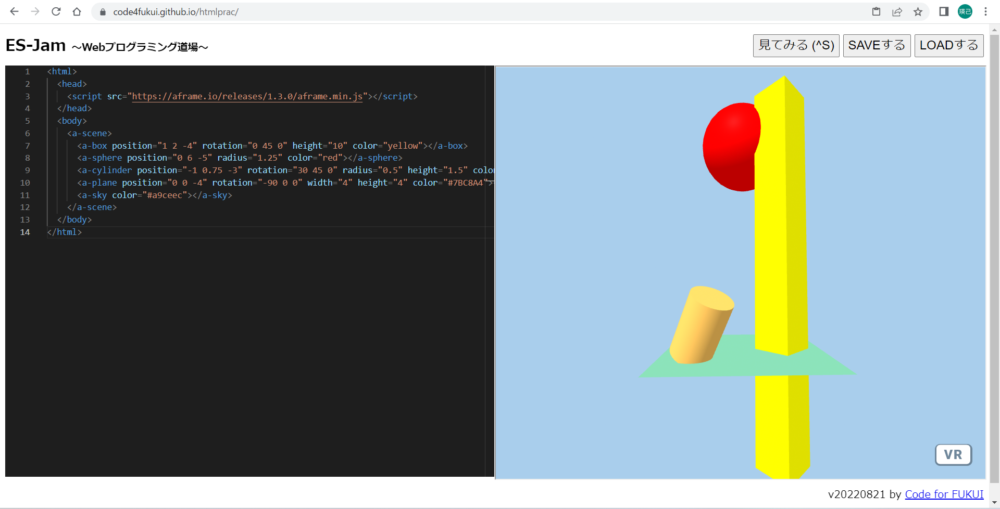
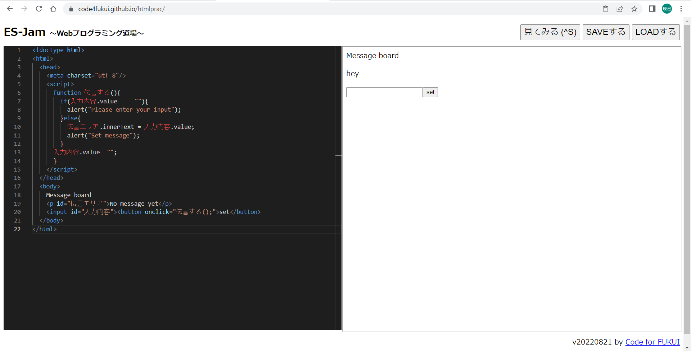

第3週目
3-1 JavaScript体験：VR空間を作る

VR体験
1.内容
htmlを使って、ウェブ上で開ける3Dのモデルを作った。形や色やモデルの位置を変えた。
2.感想
実際に自分の立ち位置を変えて色々な角度から3Dモデルを見ると、光の当たり具合がとても細かく表現されていて面白かった。
また、自分で3Dモデルのものの角度や大きさや位置を変えることで、色々自分独自の形を表現することができてと嬉しかった。
3-2 JavaScript体験：伝言プログラムを作る

伝言板
1.内容
JavaSprictを使って、ウェブ上で動く伝言板を作った。
2.感想
はじめはなにをかいているのかわからなかったけど、講義を聞くうちに、タグの意味を理解することができた。
実際にウェブ上にクリックできるボタンを作ったり、文字を入力できるボックスを作ったりして、とても面白かった。
もう少し工夫をすれば、ログインページみたいなものを作れると思った。
3-3 JavaScriptプログラムの３次元空間の体験
i
1.内容
実際にVRで円柱や球を見る。
2.感想
円柱や球や立方体を見て、光の反射や影がリアルだと思いました。
また、球を飛ばして跳ね返りを見ることができ、実際にある立方体や球に球が跳ね返ってるのがとても面白かった。
自分でこのようなプログラムを作ってみたいと思いました。